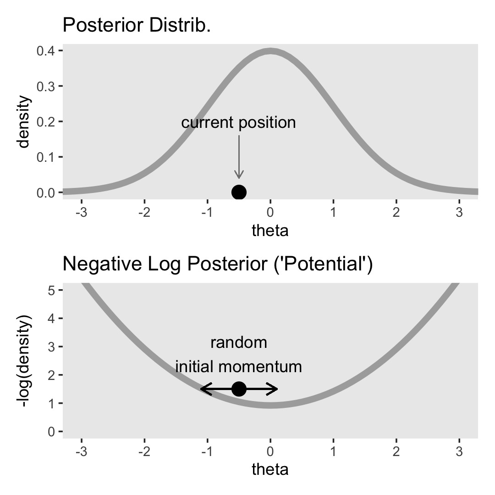
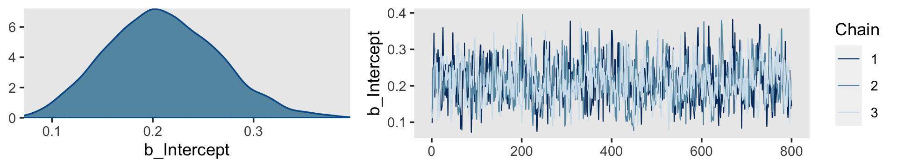
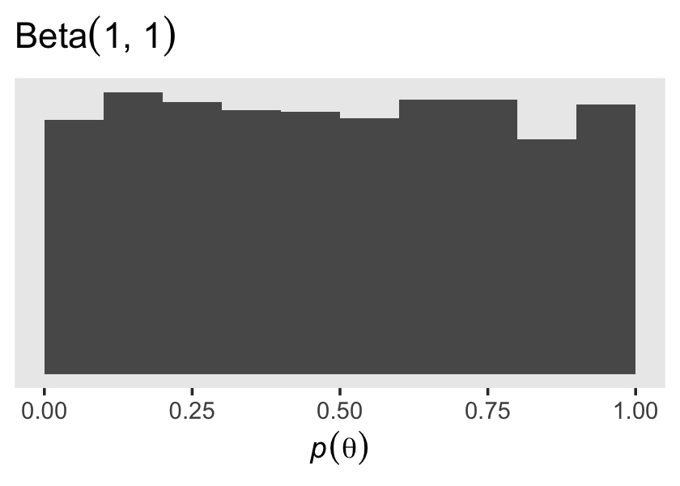

14 Stan
Stan is the name of a software package that creates representative samples of parameter values from a posterior distribution for complex hierarchical models, analogous to JAGS…
According to the Stan reference manual, Stan is named after Stanislaw Ulam (1909–1984), who was a pioneer of Monte Carlo methods. (Stan is not named after the slang term referring to an overenthusiastic or psychotic fanatic, formed by a combination of the words “stalker” and “fan.”) The name of the software package has also been unpacked as the acronym, Sampling Through Adaptive Neighborhoods (Gelman et al., 2013, p. 307), but it is usually written as Stan not STAN.
Stan uses a different method than JAGS for generating Monte Carlo steps. The method is called Hamiltonian Monte Carlo (HMC). HMC can be more effective than the various samplers in JAGS and BUGS, especially for large complex models. Moreover, Stan operates with compiled C++ and allows greater programming flexibility, which again is especially useful for unusual or complex models. For large data sets or complex models, Stan can provide solutions when JAGS (or BUGS) takes too long or fails. (pp. 399–400, emphasis in the original)
To learn more about Stan from the Stan team themselves, check out the main website: https://mc-stan.org/. If you like to dive deep, bookmark the Stan user’s guide (Stan Development Team, 2022c) and the Stan reference manual (Stan Development Team, 2022b).
We won’t be using Stan directly in this ebook. I prefer working with it indirectly through the interface of Bürkner’s brms package instead. If you haven’t already, bookmark the brms GitHub repository, CRAN page, and reference manual (Bürkner, 2022d). You can also view Bürkner’s talk from the useR! International R User 2017 Conference, brms: Bayesian multilevel models using Stan. Here’s how Bürkner described brms in its GitHub repo:
The brms package provides an interface to fit Bayesian generalized (non-)linear multivariate multilevel models using Stan, which is a C++ package for performing full Bayesian inference (see http://mc-stan.org/). The formula syntax is very similar to that of the package lme4 to provide a familiar and simple interface for performing regression analyses. A wide range of response distributions are supported, allowing users to fit – among others – linear, robust linear, count data, survival, response times, ordinal, zero-inflated, and even self-defined mixture models all in a multilevel context. Further modeling options include non-linear and smooth terms, auto-correlation structures, censored data, missing value imputation, and quite a few more. In addition, all parameters of the response distribution can be predicted in order to perform distributional regression. Multivariate models (i.e., models with multiple response variables) can be fit, as well. Prior specifications are flexible and explicitly encourage users to apply prior distributions that actually reflect their beliefs. Model fit can easily be assessed and compared with posterior predictive checks, cross-validation, and Bayes factors. (emphasis in the original)
14.1 HMC sampling
“Stan generates random representative samples from a posterior distribution by using a variation of the Metropolis algorithm called HMC” (p. 400).
I’m not going to walk through the the details of HMC sampling, at this time. In addition to Kruschke’s explanation, you might check out McElreath’s lecture on HMC from January, 2019 or one of these lectures (here, here, or here) by Michael Betancourt. I’m also not sufficiently up on the math required to properly make the figures in this section. But we can at least get the ball rolling.
library(tidyverse)
library(patchwork)Here’s the primary data for the two upper left panels for Figure 14.1.
d <-
tibble(theta = seq(from = -4, to = 4, by = 0.1)) %>%
mutate(density = dnorm(theta, mean = 0, sd = 1)) %>%
mutate(`-log(density)` = -log(density))
head(d)## # A tibble: 6 × 3
## theta density `-log(density)`
## <dbl> <dbl> <dbl>
## 1 -4 0.000134 8.92
## 2 -3.9 0.000199 8.52
## 3 -3.8 0.000292 8.14
## 4 -3.7 0.000425 7.76
## 5 -3.6 0.000612 7.40
## 6 -3.5 0.000873 7.04We need a couple more tibbles for the annotation.
position <-
tibble(theta = -0.5,
density = 0,
`-log(density)` = 1.5)
text <-
tibble(theta = -0.5,
density = 0.2,
`-log(density)` = 2.75,
label1 = "current position",
label2 = "random\ninitial momentum")Plot.
theme_set(
theme_grey() +
theme(panel.grid = element_blank())
)
p1 <-
d %>%
ggplot(aes(x = theta, y = density)) +
geom_line(size = 2, color = "grey67") +
geom_point(data = position,
size = 4) +
geom_text(data = text,
aes(label = label1)) +
geom_segment(x = -0.5, xend = -0.5,
y = 0.16, yend = 0.04,
arrow = arrow(length = unit(0.2, "cm")),
size = 1/4, color = "grey50") +
ggtitle("Posterior Distrib.") +
coord_cartesian(xlim = c(-3, 3))## Warning: Using `size` aesthetic for lines was deprecated in ggplot2 3.4.0.
## ℹ Please use `linewidth` instead.p2 <-
d %>%
ggplot(aes(x = theta, y = `-log(density)`)) +
geom_line(size = 2, color = "grey67") +
geom_point(data = position,
size = 4) +
geom_text(data = text,
aes(label = label2)) +
geom_segment(x = -1.1, xend = 0.1,
y = 1.5, yend = 1.5,
arrow = arrow(length = unit(0.275, "cm"), ends = "both")) +
ggtitle("Negative Log Posterior ('Potential')") +
coord_cartesian(xlim = c(-3, 3),
ylim = c(0, 5))
(p1 / p2) &
scale_x_continuous(breaks = -3:3)
For the plots in this chapter, we keep things simple and rely on the ggplot2 defaults with one exception: we omitted those unnecessary white gridlines with the theme_set() argument at the top of that block. You can undo that with theme_set(ggplot2::theme_grey()).
Because I’m not sure how to make the dots and trajectories depicted in the third row, I also won’t be able to make proper histograms for the bottom rows. This will go for Figures 14.2 and 14.3, too. If you know how to reproduce them properly, please share your code in my GitHub issue #21.
Let’s let Kruschke close this section out:
Mathematical theories that accurately describe the dynamics of mechanical systems have been worked out by physicists. The formulation here, in terms of kinetic and potential energy, is named after William Rowan Hamilton (1805–1865). HMC was described in the physics literature by Duane et al. (1987) (who called it “hybrid” Monte Carlo), and HMC was applied to statistical problems by R. M. Neal (1994). A brief mathematical overview of HMC is presented by (MacKay, 2003, Chapter 30). A more thorough mathematical review of HMC is provided by (R. Neal, 2011). Details of how HMC is implemented in Stan can be found in the Stan reference manual and in the book by Gelman et al. (2013). (pp. 405–406)
14.2 Installing Stan
You can learn about installing Stan at https://mc-stan.org/users/interfaces/. We, of course, have already been working with Stan via brms. Bürkner has some nice information on how to install brms in the FAQ section of the brms GitHub repository.
To install the latest official release from CRAN, execute install.packages("brms"). If you’d like to install the current developmental version, you can execute the following.
if (!requireNamespace("remotes")) {
install.packages("remotes")
}
remotes::install_github("paul-buerkner/brms")As Kruschke advised, it’s a good idea to “be sure that your versions of R and RStudio are up to date” (p. 407) when installing brms and/or Stan.
People sometimes have difficulties installing Stan or brms after a they perform a software update. If you find yourself in that position, browse through some of the threads on the Stan forums at https://discourse.mc-stan.org/.
14.3 A Complete example
If you’d like to learn how to fit models in Stan itself, you might consult the updated versions of the Stan user’s guide and Stan reference manual, which you can find at https://mc-stan.org/users/documentation/. You might also check out the Stan Case studies and other tutorials listed by the Stan team.
We will continue using Stan via brms.
The model Kruschke walked through in this section followed the form
\[\begin{align*} y_i & \sim \operatorname{Bernoulli} (\theta) \\ \theta & \sim \operatorname{Beta} (1, 1), \end{align*}\]
where \(\theta\) is the probability \(y = 1\). Kruschke showed how to simulate the data at the top of page 409. Here’s our tidyverse version.
n <- 50
z <- 10
my_data <- tibble(y = rep(1:0, times = c(z, n - z)))
glimpse(my_data)## Rows: 50
## Columns: 1
## $ y <int> 1, 1, 1, 1, 1, 1, 1, 1, 1, 1, 0, 0, 0, 0, 0, 0, 0, 0, 0, 0, 0, 0, 0,…Time to fire up brms.
library(brms)In the absence of predictors, you might think of this as an intercept-only model. You can fit the simple intercept-only Bernoulli model with brms::brm() like this.
fit14.1 <-
brm(data = my_data,
family = bernoulli(link = identity),
y ~ 1,
prior(beta(1, 1), class = Intercept, lb = 0, ub = 1),
iter = 1000, warmup = 200, chains = 3, cores = 3,
seed = 14,
file = "fits/fit14.01")As Kruschke wrote,
iteris the total number of steps per chain, includingwarmupsteps in each chain. Thinning merely marks some steps as not to be used; thinning does not increase the number of steps taken. Thus, the total number of steps that Stan takes ischains·iter. Of those steps, the ones actually used as representative have a total count ofchains·(iter−warmup)/thin. Therefore, if you know the desired total steps you want to keep, and you know the warm-up, chains, and thinning, then you can compute that the necessaryiterequals the desired total multiplied bythin/chains+warmup.We did not specify the initial values of the chains in the example above, instead letting Stan randomly initialize the chains by default. The chains can be initialized by the user with the argument
init, analogous to JAGS. (p. 409)
Unlike what Kruschke showed on page 409, we did not use the thin argument, above, and will generally avoid thinning in this ebook. You just don’t tend to need to thin your chains when using Stan. I do, however, like to use the seed argument. Because computers use pseudorandom number generators to take random draws, I prefer to make my random draws reproducible by setting my seed. Others have argued against this. You do you.
Kruschke mentioned trace plots and model summaries. Here’s our trace plot, which comes with a marginal density plot by brms default.
plot(fit14.1, widths = c(2, 3))
Here’s the summary.
print(fit14.1)## Family: bernoulli
## Links: mu = identity
## Formula: y ~ 1
## Data: my_data (Number of observations: 50)
## Draws: 3 chains, each with iter = 1000; warmup = 200; thin = 1;
## total post-warmup draws = 2400
##
## Population-Level Effects:
## Estimate Est.Error l-95% CI u-95% CI Rhat Bulk_ESS Tail_ESS
## Intercept 0.21 0.05 0.11 0.32 1.00 789 928
##
## Draws were sampled using sampling(NUTS). For each parameter, Bulk_ESS
## and Tail_ESS are effective sample size measures, and Rhat is the potential
## scale reduction factor on split chains (at convergence, Rhat = 1).14.3.1 Reusing the compiled model.
“Because model compilation can take a while in Stan, it is convenient to store the DSO of a successfully compiled model and use it repeatedly for different data sets” (p. 410). This true for our brms paradigm, too. To reuse a compiled brm() model, we typically use the update() function. To demonstrate, we’ll first want some new data. Here we’ll increase our z value to 20.
z <- 20
my_data <- tibble(y = rep(1:0, times = c(z, n - z)))
glimpse(my_data)## Rows: 50
## Columns: 1
## $ y <int> 1, 1, 1, 1, 1, 1, 1, 1, 1, 1, 1, 1, 1, 1, 1, 1, 1, 1, 1, 1, 0, 0, 0,…For the first and most important argument, you need to tell update() what fit you’re reusing. We’ll use fit14.1. You also need to tell update() about your new data with the newdata argument. Because the model formula and priors are the same as before, we don’t need to use those arguments, here.
fit14.2 <-
update(fit14.1,
newdata = my_data,
iter = 1000, warmup = 200, chains = 3, cores = 3,
seed = 14,
file = "fits/fit14.02")## The desired updates require recompiling the modelHere’s the summary using the fixef() function.
fixef(fit14.2)## Estimate Est.Error Q2.5 Q97.5
## Intercept 0.4035677 0.06494748 0.2743692 0.532682914.3.2 General structure of Stan model specification.
“The general structure of model specifications in Stan consist of six blocks” (p. 410). We don’t need to worry about this when using brms. Just use the brm() and update() functions. But if you’re curious about what the underlying Stan code is for your brms models, index the model fit with $model.
fit14.2$model## // generated with brms 2.17.0
## functions {
## }
## data {
## int<lower=1> N; // total number of observations
## int Y[N]; // response variable
## int prior_only; // should the likelihood be ignored?
## }
## transformed data {
## }
## parameters {
## real<lower=0,upper=1> Intercept; // temporary intercept for centered predictors
## }
## transformed parameters {
## real lprior = 0; // prior contributions to the log posterior
## lprior += beta_lpdf(Intercept | 1, 1);
## }
## model {
## // likelihood including constants
## if (!prior_only) {
## // initialize linear predictor term
## vector[N] mu = Intercept + rep_vector(0.0, N);
## target += bernoulli_lpmf(Y | mu);
## }
## // priors including constants
## target += lprior;
## }
## generated quantities {
## // actual population-level intercept
## real b_Intercept = Intercept;
## }14.3.3 Think log probability to think like Stan.
The material in this subsection is outside of the scope of this ebook.
14.3.4 Sampling the prior in Stan.
“There are several reasons why we might want to examine a sample from the prior distribution of a model” (p. 413). Happily, we can do this with brms with the sample_prior argument in the brm() function. By default, it is set to "no" and does not take prior samples. If you instead set sample_prior = "yes" or sample_prior = TRUE, samples are drawn solely from the prior.
Here’s how to do that with an updated version of the model from fit14.2.
fit14.3 <-
brm(data = my_data,
family = bernoulli(link = identity),
y ~ 1,
prior(beta(1, 1), class = Intercept, lb = 0, ub = 1),
iter = 1000, warmup = 200, chains = 3, cores = 3,
sample_prior = "yes",
seed = 14,
file = "fits/fit14.03")Now we can gather the prior draws with the prior_draws() function.
prior_draws(fit14.3) %>%
head()## Intercept
## 1 0.2593548
## 2 0.1327571
## 3 0.2968221
## 4 0.4340424
## 5 0.3570039
## 6 0.4815478Here’s a look at the prior distribution.
prior_draws(fit14.3) %>%
ggplot(aes(x = Intercept)) +
geom_histogram(binwidth = 0.1, boundary = 0) +
scale_y_continuous(NULL, breaks = NULL) +
labs(title = expression("Beta"*(1*", "*1)),
x = expression(italic(p)(theta)))
14.3.5 Simplified scripts for frequently used analyses.
This is not our approach when using brms. Throughout the chapters of this ebook, we will learn to make skillful use of the brms::brm() function to fit all our models. Once in a while we’ll take a shortcut and reuse a precompiled fit with update().
14.4 Specify models top-down in Stan
For humans, descriptive models begin, conceptually, with the data that are to be described. We first know the measurement scale of the data and their structure. Then we conceive of a likelihood function for the data. The likelihood function has meaningful parameters, which we might want to re-express in terms of other data (called covariates, predictors, or regressors). Then we build a meaningful hierarchical prior on the parameters. Finally, at the top level, we specify constants that express our prior knowledge, which might be vague or noncommittal. (p. 414)
If you look at how I typically organize the arguments within brms::brm(), you’ll see this is generally the case there, too. Take another look at the code for fit14.1:
fit14.1 <-
brm(data = my_data,
family = bernoulli(link = identity),
y ~ 1,
prior(beta(1, 1), class = Intercept, lb = 0, ub = 1),
iter = 1000, warmup = 200, chains = 3, cores = 3,
seed = 14,
file = "fits/fit14.01")The first line within brm() defined the data. The second line defined the likelihood function and its link function. We haven’t talked much about link functions, yet, but that will start in Chapter 15. Likelihoods contain parameters and our third line within brm() defined the equation we wanted to use to predict/describe our parameter of interest, \(\theta\). We defined our sole prior in the fourth line. The remaining arguments contain the unsexy technical specifications, such as how many MCMC chains we’d like to use and into what folder we’d like to save our fit as an external file.
You do not need to arrange brm() arguments this way. For other arrangements, take a look at the examples in the brms reference manual or in some of Bürkner’s vignettes, such as his Estimating multivariate models with brms (2022b). However you go about fitting your models with brm(), I mainly recommend you find a general style and stick with it. Standardizing your approach will make your code more readable for others and yourself.
14.5 Limitations and extras
At the time of this writing, one of the main limitations of Stan is that it does not allow discrete (i.e., categorical) parameters. The reason for this limitation is that Stan has HMC as its foundational sampling method, and HMC requires computing the gradient (i.e., derivative) of the posterior distribution with respect to the parameters. Of course, gradients are undefined for discrete parameters. (p. 415)
To my knowledge this is still the case, which means brms has this limitation, too. As wildly powerful as it is, brms it not as flexible as working directly with Stan. However, Bürkner and others are constantly expanding its capabilities. Probably the best places keep track of the new and evolving features of brms are the issues and news sections in its GitHub repo, https://github.com/paul-buerkner/brms.
Session info
sessionInfo()## R version 4.2.0 (2022-04-22)
## Platform: x86_64-apple-darwin17.0 (64-bit)
## Running under: macOS Big Sur/Monterey 10.16
##
## Matrix products: default
## BLAS: /Library/Frameworks/R.framework/Versions/4.2/Resources/lib/libRblas.0.dylib
## LAPACK: /Library/Frameworks/R.framework/Versions/4.2/Resources/lib/libRlapack.dylib
##
## locale:
## [1] en_US.UTF-8/en_US.UTF-8/en_US.UTF-8/C/en_US.UTF-8/en_US.UTF-8
##
## attached base packages:
## [1] stats graphics grDevices utils datasets methods base
##
## other attached packages:
## [1] brms_2.18.0 Rcpp_1.0.9 patchwork_1.1.2 forcats_0.5.1
## [5] stringr_1.4.1 dplyr_1.0.10 purrr_0.3.4 readr_2.1.2
## [9] tidyr_1.2.1 tibble_3.1.8 ggplot2_3.4.0 tidyverse_1.3.2
##
## loaded via a namespace (and not attached):
## [1] readxl_1.4.1 backports_1.4.1 plyr_1.8.7
## [4] igraph_1.3.4 splines_4.2.0 crosstalk_1.2.0
## [7] TH.data_1.1-1 rstantools_2.2.0 inline_0.3.19
## [10] digest_0.6.30 htmltools_0.5.3 fansi_1.0.3
## [13] magrittr_2.0.3 checkmate_2.1.0 googlesheets4_1.0.1
## [16] tzdb_0.3.0 modelr_0.1.8 RcppParallel_5.1.5
## [19] matrixStats_0.62.0 xts_0.12.1 sandwich_3.0-2
## [22] prettyunits_1.1.1 colorspace_2.0-3 rvest_1.0.2
## [25] haven_2.5.1 xfun_0.35 callr_3.7.3
## [28] crayon_1.5.2 jsonlite_1.8.3 lme4_1.1-31
## [31] survival_3.4-0 zoo_1.8-10 glue_1.6.2
## [34] gtable_0.3.1 gargle_1.2.0 emmeans_1.8.0
## [37] distributional_0.3.1 pkgbuild_1.3.1 rstan_2.21.7
## [40] abind_1.4-5 scales_1.2.1 mvtnorm_1.1-3
## [43] DBI_1.1.3 miniUI_0.1.1.1 xtable_1.8-4
## [46] stats4_4.2.0 StanHeaders_2.21.0-7 DT_0.24
## [49] htmlwidgets_1.5.4 httr_1.4.4 threejs_0.3.3
## [52] posterior_1.3.1 ellipsis_0.3.2 pkgconfig_2.0.3
## [55] loo_2.5.1 farver_2.1.1 sass_0.4.2
## [58] dbplyr_2.2.1 utf8_1.2.2 tidyselect_1.1.2
## [61] labeling_0.4.2 rlang_1.0.6 reshape2_1.4.4
## [64] later_1.3.0 munsell_0.5.0 cellranger_1.1.0
## [67] tools_4.2.0 cachem_1.0.6 cli_3.5.0
## [70] generics_0.1.3 broom_1.0.1 ggridges_0.5.3
## [73] evaluate_0.18 fastmap_1.1.0 processx_3.8.0
## [76] knitr_1.40 fs_1.5.2 nlme_3.1-159
## [79] mime_0.12 projpred_2.2.1 xml2_1.3.3
## [82] compiler_4.2.0 bayesplot_1.9.0 shinythemes_1.2.0
## [85] rstudioapi_0.13 gamm4_0.2-6 reprex_2.0.2
## [88] bslib_0.4.0 stringi_1.7.8 highr_0.9
## [91] ps_1.7.2 Brobdingnag_1.2-8 lattice_0.20-45
## [94] Matrix_1.4-1 nloptr_2.0.3 markdown_1.1
## [97] shinyjs_2.1.0 tensorA_0.36.2 vctrs_0.5.1
## [100] pillar_1.8.1 lifecycle_1.0.3 jquerylib_0.1.4
## [103] bridgesampling_1.1-2 estimability_1.4.1 httpuv_1.6.5
## [106] R6_2.5.1 bookdown_0.28 promises_1.2.0.1
## [109] gridExtra_2.3 codetools_0.2-18 boot_1.3-28
## [112] colourpicker_1.1.1 MASS_7.3-58.1 gtools_3.9.3
## [115] assertthat_0.2.1 withr_2.5.0 shinystan_2.6.0
## [118] multcomp_1.4-20 mgcv_1.8-40 parallel_4.2.0
## [121] hms_1.1.1 grid_4.2.0 minqa_1.2.5
## [124] coda_0.19-4 rmarkdown_2.16 googledrive_2.0.0
## [127] shiny_1.7.2 lubridate_1.8.0 base64enc_0.1-3
## [130] dygraphs_1.1.1.6## Warning in rm(d, position, text, p1, p2, n, z, my_data, fit14.1, fit14.2, :
## object 'fit14.4' not found